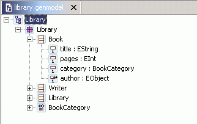
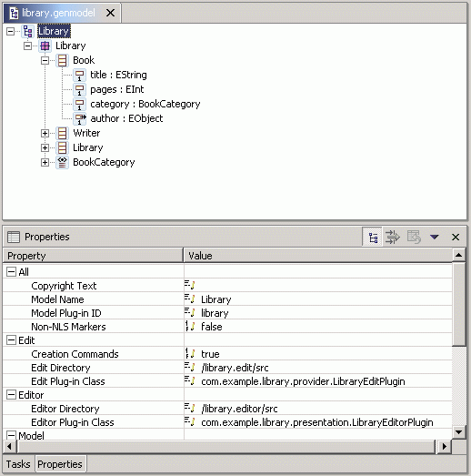

The GenModel shows a root node, representing the whole model. The model object has children that represent its packages, whose children then represent classifiers (classes and datatypes, including enumerated types). The children of classes are class attributes, references, and operations; the children of enumerated types are enum literals.
In most cases, the values of the properities need not be changed from their default values, but these options can provide a great deal of control over the code that gets generated. This topic will be explored more fully in future tutorial material; for now, select several different GenModel objects, and observe their properties.
The GenModel is also the place where you initiate the code generation. By right-clicking on an object in the model, you can generate code for it.


After generation, the class interfaces and enum class will have been created, and a new pair of interfaces will have been created for the package itself and for the factory. There will also be two new packages, with "impl" and "util" suffixes, which contain implementations of the interfaces and additional utility classes, and a "plugin.xml" manifest file for the model plugin.
If you change the XML schema file, you can regenerate the model code from it, and the corresponding changes in the model code will be merged with any hand modifications that may have been made to the code that was generated previously. You can also selectively generate a subset of the model code by right-clicking on a package, class, or enum object and selecting "Generate Model Code" from the pop-up menu.